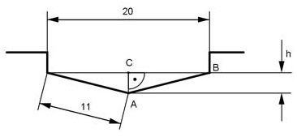

Pythagoras Aufgabe 72 Mit der dargestellten Lehre lässt sich überprüfen, ob ein Spiralbohrer richtig nachgeschliffen ist. Berechnen Sie die Höhe h in mm, wenn alle Maße in mm angegeben sind.

Satz von Pythagoras im Dreieck ABC: AB2 = AC2 + BC2 |-BC2 AC2 = h2 = AB2 - BC2 20 h2 = 112 - (----)2 2 h2 = 112 mm2 - 102 mm2 = 21 mm2 |√ h = 4,6 mm